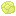
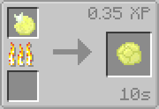
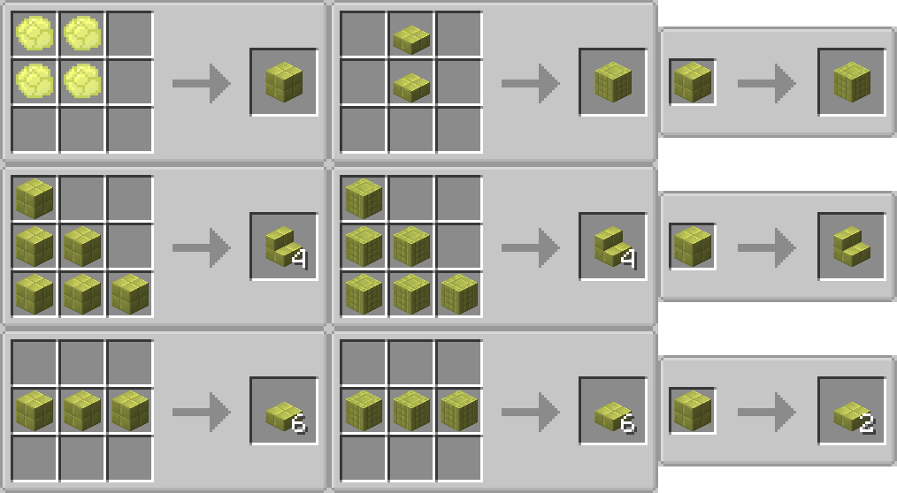
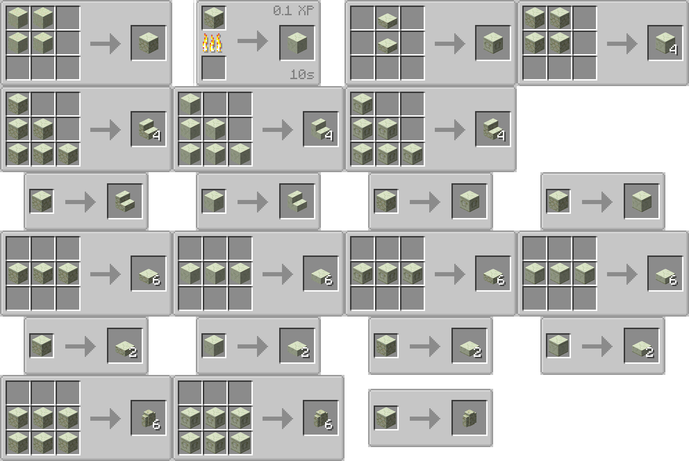
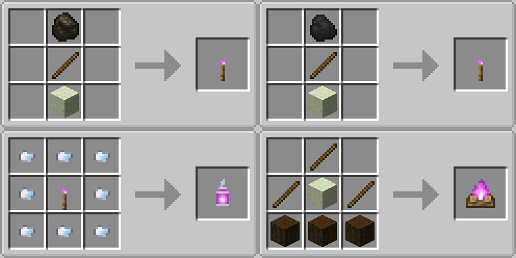
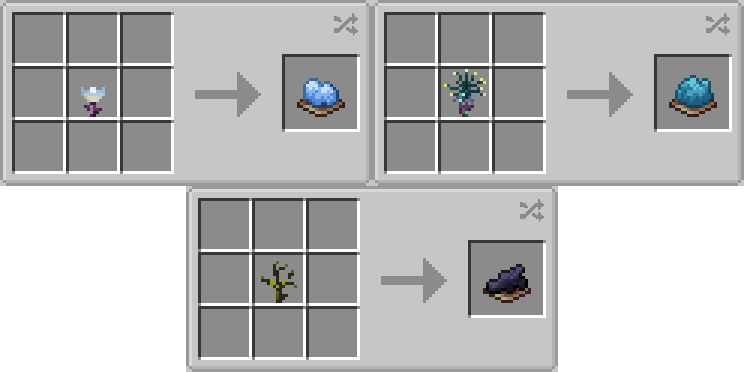

GILE DOCUMENTATION
Moon Desert
An arid landscape composed entirely of lunar materials.

- Blocks: Primarily made of Moon Sand and Moon Sandstone underneath it.
- Flora: Dry Flowers and Glowing Chorus plants populate the dunes.
- Fauna: A specific mob native to the Moon Desert can also be found wandering here. Jerboa

Glowing Chorus Fruit can be eaten giving glowing effect, teleporting like normal chorus fruit and restoring ??? HUNGERIMAGE. It can be also used for smelting. Its popped version gives a fluo block set.

Fluo Block set
Those are building blocks that emmit some light.

Moon Sandstone
Moon sand and sandstone found in this desert can be used to craft the whole corresponding block set.

Moon Fire
Setting on fire moon sand will place moon fire on it. So obviously the moon sand can be used in crafting recipes for torch, lantern and campfire.



Jerboa
Ground · Peaceful · Overworld / The End 6 HP
6 HP
Spawns in tiny groups only in the Moon Desert biome.
Wanders around in any desert. Have two variants, depending on the dimension it spawned.
Can be bred using only dry flowers. If not holding a dry flower, hides in any sand. If not on sandy ground, tries to find it, fleeing with double speed from the danger.
 0-1
0-1
 0-4
0-4
P.S. Another Jerboa type spawns in the Overworld - Desert pale yellow one. Spawns in any mesa or desert biome. The Moon type is slightly green-ish.

Moon Flowers
Every moon flower can also be used to craft a dye.
